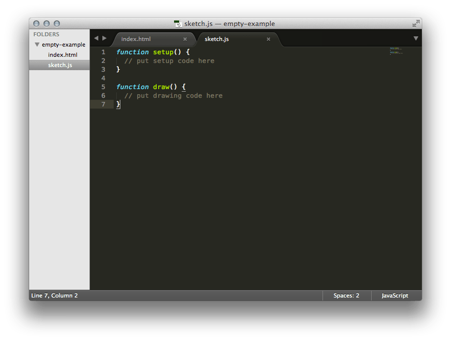
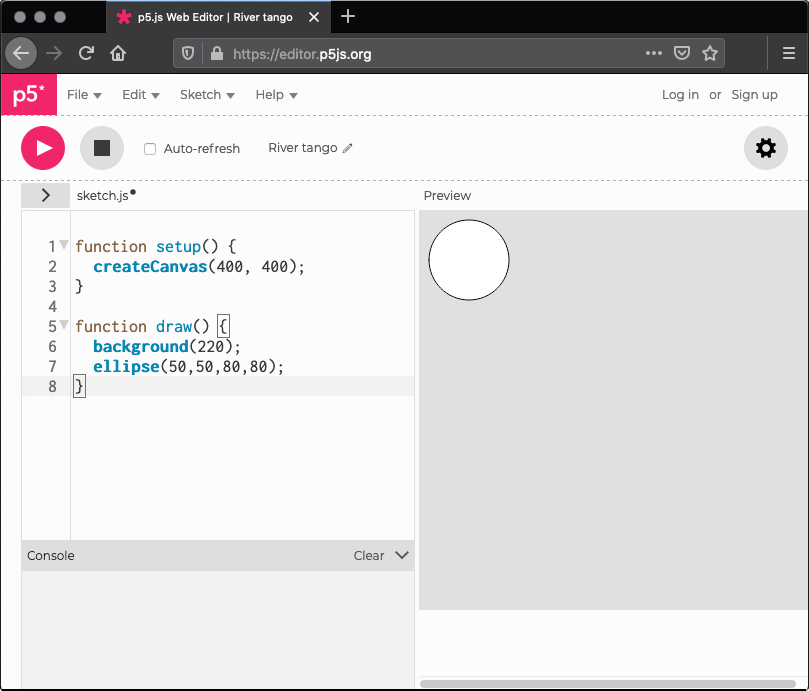
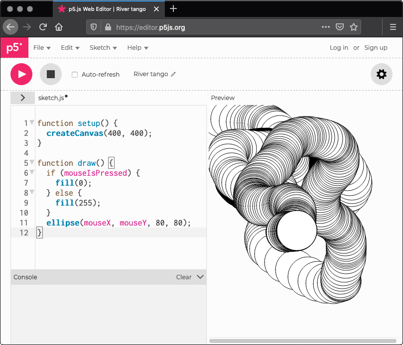

Empezar
Esta página te guía a través del proceso de configuración de un proyecto con p5.js y hacer tu primer bosquejo. Si estás usando el editor de p5, puedes saltar a la sección Tu primer bosquejo . Los usuarios de Processing pueden revisar el Tutorial de transición desde Processing.
Descarga y configuración de archivos
La manera más simple de empezar es usando el ejemplo en blanco incluido en p5.js completo disponible en el sitio.
Si revisas el archivo index.html, te darás cuenta que tiene un enlace al archivo p5.js. Si estás buscando usar la versión miniaturizada (comprimida para que las páginas carguen más rápidamente), cambia el enlace a p5.min.js.
<script src="../p5.min.js"></script>De forma alternativa, puedes enlazar a un archivo p5.js alojado en línea. Todas las versiones de p5.js están almacenadas en un CDN (Content Delivery Network). Puedes ver un historial de estas versiones aquí: p5.js CDN. En este caso, puedes cambiar el enlace a:
<script src="//cdnjs.cloudflare.com/ajax/libs/p5.js/[p5_version]/p5.js"></script>Una página HTML de ejemplo podría verse así:
<html>
<head>
<script src="//cdnjs.cloudflare.com/ajax/libs/p5.js/[p5_version]/p5.js"></script>
<script src="sketch.js"></script>
</head>
<body>
</body>
</html>Ambiente
Puedes usar el editor de código que prefieras. Las instrucciones para usar y configurar Sublime Text 2 están incluidas a continuación, otras buenas opciones de editores incluyen Brackets, Atom y OpenProcessing.
Abre Sublime. Despliega el menú File (archivo) y elige Open... (abrir) y selecciona el directorio donde se encuentran tus archivos html y js. En la barra lateral izquierda, podrás ver ahora el nombre del directorio en la parte superior, y a continuación una lista con los archivos contenidos en el directorio.
Haz click en tu archivo sketch.js y se abrirá a la derecha donde puedes editarlo. 
Abre el archivo index.html haciendo doble click en él en tu explorador de archivos o escribe: file:///la/ubicacion/de/tu/archivo/html
en la barra de direcciones de tu navegador para ver tu bosquejo.
Tu primer bosquejo
En tu editor, escribe lo siguiente:
function setup() {
}
function draw() {
ellipse(50, 50, 80, 80);
}
Esta línea de código significa "dibuja una elipse, con su centro 50 pixeles a la izquierda del borde izquierdo y 50 pixeles abajo del borde superior, con un ancho y un alto de 80 pixeles".
Graba tu bosquejo y refresca la página en tu navegador. Si has escrito todo correctamente, verás esto:
Si no lo escribiste correctamente, podría no aparecer nada. Si esto ocurre, asegúrate de haber copiado el código del ejemplo de manera exacta: los números deben estar contenidos dentro de paréntesis y tener comas entre cada uno de ellos, y la línea debe terminar con un punto y coma.
Una de las cosas más difíciles de empezar a programar es que tienes que ser muy específico con la sintaxis. El navegador no es siempre lo suficientemente inteligente como para saber lo que quieres decir, y puede ser muy exigente con la puntuación. Te acostumbrarás a esto con un poco de práctica. Dependiendo del navegador que utilices, puedes ver los errores al revisar la "consola" JavaScript. En Chrome, por ejemplo, esto está bajo Ver > Desarrollador > Consola JavaScript.
A continuación, haremos un bosquejo más interesante. Borra el texto del ejemplo anterior y prueba este:
function setup() {
createCanvas(640, 480);
}
function draw() {
if (mouseIsPressed) {
fill(0);
} else {
fill(255);
}
ellipse(mouseX, mouseY, 80, 80);
}
Este programa crea una ventana con un ancho de 640 pixeles y una altura de 480 pixeles, y luego empieza a dibujar círculos blancos según la posición del ratón. Cuando presionas un botón del ratón, el color del círculo cambia a negro. Explicaremos más adelante los detalles acerca de los elementos de este programa. Por ahora corre el código, mueve el ratón, y haz click para probarlo.
¿Qué viene después?
- Lee el tutorial de transición desde Processing para aprender cómo convertir de Processing a p5.js y sobre las mayores diferencias entre ellos.
- Revisa la referencia para ver la documentación completa.
- Revisa las páginas de tutoriales y ejemplos para aprender más.
Partes de este tutorial fueron adaptados del libro Getting Started with p5.js, por Lauren McCarthy, Casey Reas y Ben Fry, O'Reilly / Make 2015. Copyright © 2015 Lauren McCarthy, Casey Reas y Ben Fry. Todos los derechos reservados.